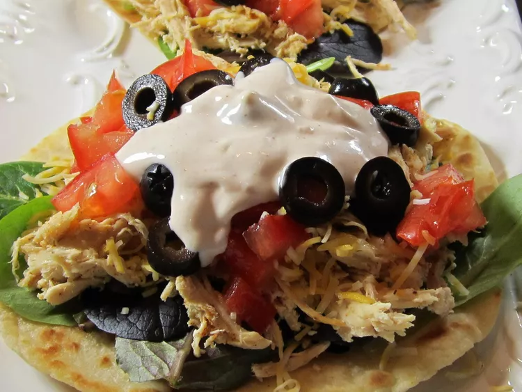

Odin Recipes - Ranch Chicken Tacos

Ranch Chicken Tacos
Description
These ranch chicken tacos are great change from regular Mexican-style tacos A quick, cool summer dinner made with leftover rotisserie chicken. Naturally, you can use any type of chicken cooked the way you like; just be sure to shred it for real tacos.
Ingredients
For the Dressing:
- 3 cloves garlic, crushed
- ½ cup seasoned rice vinegar
- 1 tablespoon soy sauce
- 1 tablespoon fish sauce
- 1 tablespoon brown sugar
- 1 tablespoon Sriracha chile sauce
- 1 tablespoon hoisin sauce
- 1 teaspoon sesame oil
- cooked chicken breast
- 1 (8 ounce) package spaghetti
- 1 cup grated carrots
- 1 red bell pepper, thinly sliced
- 4 green onions, thinly sliced
- ½ cup chopped roasted, salted peanuts
- ⅓ cup chopped fresh basil
- ⅓ cup chopped fresh mint
- ⅓ cup chopped cilantro